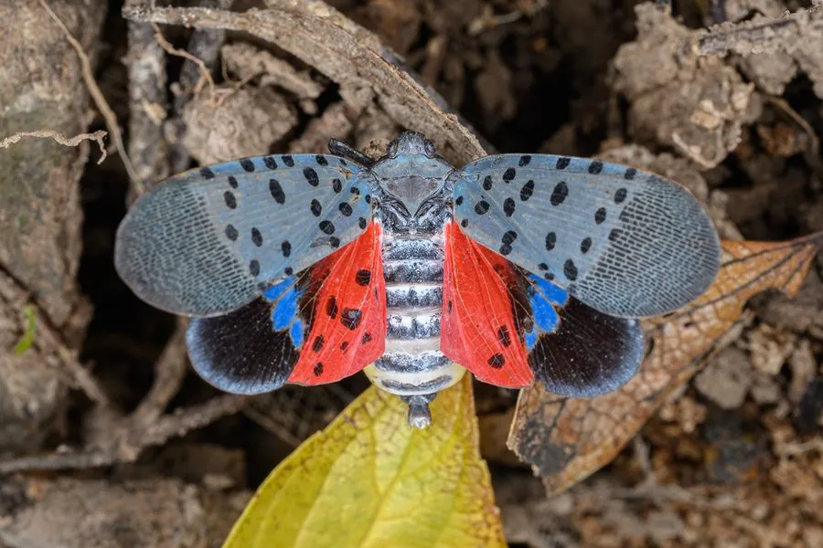

昆虫 · 动物界
斑衣蜡蝉 Lycorma delicatula

成虫前翅灰褐带黑斑、后翅鲜红带黑白斑的大型蜡蝉，善跳跃，刺吸臭椿等植物汁液，是农林害虫和入侵物种。
- 分类
- 门节肢动物门纲昆虫纲目半翅目科蜡蝉科属斑衣蜡蝉属
- 栖息环境
- 臭椿、葡萄园、果园和城市绿地，卵块产于树干上
- 地理分布
- 原产东亚，中国大部分地区；已入侵北美
- 保护级别
- 暂无评估；被列为入侵农业害虫
物种志
斑衣蜡蝉成虫体长约 1.5–2 cm，前翅灰褐色，布满黑色斑点，后翅基部鲜红色，外缘黑白相间，停歇时鲜艳的后翅被遮住，飞起时露出红色，十分醒目。若虫体黑底白点，足粗壮，善跳跃。
它主要危害臭椿、葡萄、苹果、梨等植物，成虫和若虫群集在枝干上刺吸汁液，造成树势衰弱，分泌物还会诱发煤污病。斑衣蜡蝉一年发生一代，以卵块在树干上越冬，卵块呈灰褐色长方形。它原产东亚，随贸易和运输传入北美，在美国已成为重要的入侵农业害虫。防治以刮除卵块、人工捕杀、灯光诱杀和科学用药为主，调运苗木和木材时要加强检疫，防止卵块随货物传播。
形态与习性
- 食性成虫和若虫刺吸臭椿、葡萄、果树汁液
- 体长约 1.5–2 cm
- 识别前翅灰褐带黑斑，后翅基部鲜红色
- 入侵性原产东亚，已传入北美成为入侵害虫
- 防治刮除卵块、人工捕杀、灯光诱杀和科学用药
趣味知识
- 斑衣蜡蝉停歇时后翅的红色被遮住，飞起时才露出来。
- 它的若虫是黑底白点，和成虫长得完全不一样。
- 斑衣蜡蝉随苗木传入北美，成为当地重要的入侵害虫。